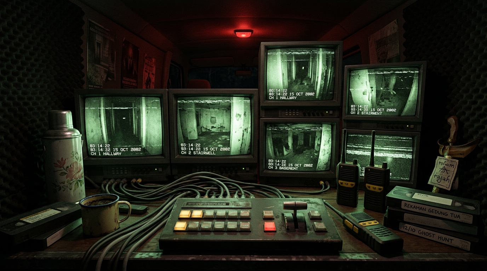
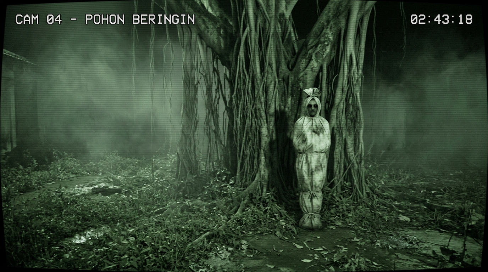
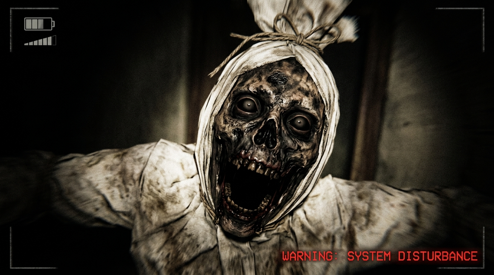

Lokasi: Bekas Rumah Sakit Kolonial Angker, Jawa Tengah.
Anda bertugas sebagai Operator Pos Pantau Kru TV di Mobil OB Van. Pantau gerak-gerik peserta uji nyali dan amankan pos dari mahluk tak kasat mata sampai jam 06:00 Subuh.
"Jika Anda tidak kuat... lambaikan tangan ke kamera!"

12:00 AM
MALAM 1
DAYA AKI:100%
KONSUMSI LISTRIK:
📺[SPACE] MONITOR CCTV PENGINTIP

REC • NIGHT VISION INFRARED
CAM 04 - POHON BERINGIN
🕯️ LILIN PESERTA: MENYALA
DENAH LOKASI UJI NYALI
🔻[SPACE] KEMBALI KE POS OPERATOR

SIARAN TERPUTUS
Mahluk gaib berhasil menerobos pos pantau operator. Uji nyali berakhir dalam kepanikan massal.
06:00 SUBUH
UJI NYALI BERHASIL!
Adzan Subuh berkumandang. Seluruh mahluk gaib lenyap kembali ke dimensi mereka. Peserta dan pos pantau berhasil bertahan semalaman penuh!
PROTOKOL OPERATOR POS PANTAU DUNIA LAIN
Selamat datang di pos produksi Dunia Lain. Sebagai operator, Anda bertanggung jawab mengawasi siaran langsung dan keselamatan peserta:
KONTROL TOMBOL CEPAT:
[SPACE]: Buka / Tutup Monitor CCTV.
[Q]: Buka / Tutup Teralis Pintu Kiri.
[A]: Nyalakan Lampu Sorot Pintu Kiri (Cek Pocong).
Gerakkan Kursor ke Pinggir Layar: Menggeser pandangan kiri/kanan.
ENTITAS MAHLUK GAIB & CARA MENGHADAPINYA:
POCONG (Pelompat Agresif): Berpindah dari CAM 4 (Pohon Beringin) ke CAM 1, lalu CAM 6 (Pintu Kiri). Jika terdengar suara loncatan debum atau terdeteksi di lampu kiri, SEGERA TUTUP PINTU KIRI!
KUNTILANAK (Penyusup Halus): Mengeluarkan suara tawa melengking atau tangisan. Muncul di CAM 3, mengitari peserta di CAM 5, lalu mendekat ke CAM 7 (Pintu Kanan). Cek lampu kanan dan tutup pintu kanan bila dia melayang di depan pintu!
GENDERUWO (Raksasa Penyerap Energi): Berdiam di CAM 2 (Kamar Jenazah). Jika mendekat ke CAM 8 (Genset), dia akan menyerap aki sangat cepat. Gunakan tombol [PANCAR AUDIO RADIO] di ruangan lain untuk memancingnya pergi!
LILIN PESERTA (CAM 5): Peserta hanya dibekali 1 lilin. Jika lilin padam ditiup hantu, peserta akan panik dan kesurupan! Buka CAM 5 dan klik [TIUP DUPA / KUATKAN DOA] jika lilin berkedip.
DAYA AKI: Menutup pintu, menyalakan lampu, dan membuka CCTV menguras aki. Jika aki 0%, genset mati total dan mahluk gaib akan langsung menyerang pos pantau!